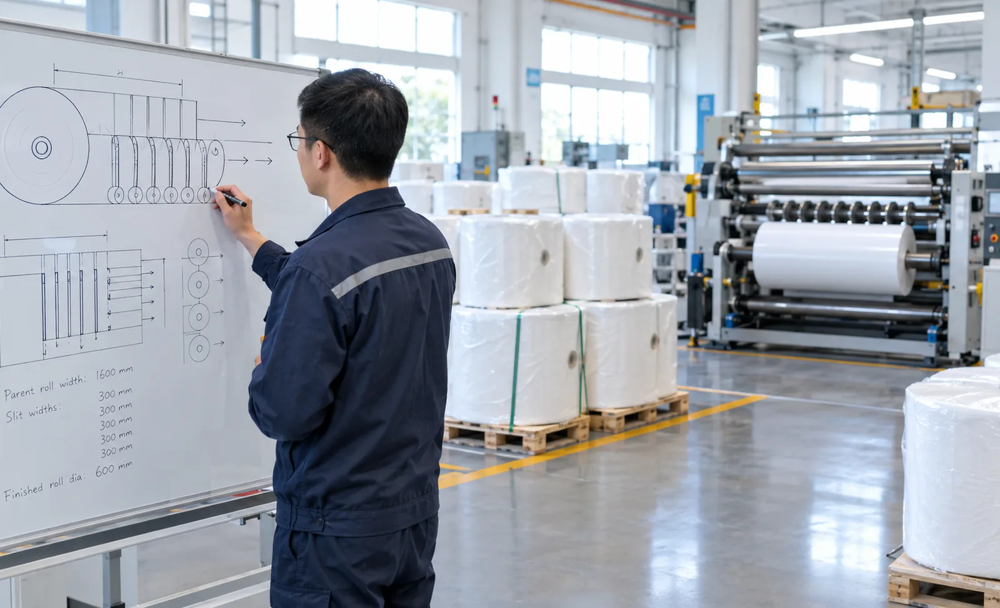
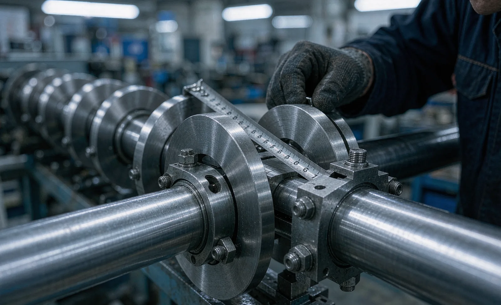

Published October 15, 2026 | By HDPTH Technical Editorial Team

Every order that lands on a slitter rewinder begins as an arithmetic problem: which combination of finished widths fits across the parent roll with the least waste and the fewest knife moves. Plants that solve this problem well routinely run trim and edge loss in low single digits; plants that improvise patterns at the machine lose several percent of every parent roll, shift after shift, for the life of the equipment. The difference is rarely operator skill. It is whether the machine — its working width, knife positioning system, and shaft arrangement — was chosen with the plant’s real order mix in mind. This guide shows buyers how to evaluate a slitter rewinder through the lens of pattern optimization.
Why the cut plan decides your margins
A pattern places slit widths side by side across the web, leaving a trim edge on both sides and, on some materials, a small service loop between certain cuts. Three numbers follow directly from the layout. First, trim percentage: the share of expensive parent material that goes to the scrap baler instead of a customer. Second, knife count: every cut in the pattern needs a blade position, and every position adds setup work. Third, pattern complexity: a layout with many different widths taxes the operator far more than a symmetric one. A machine specified too narrow forces ugly compromises — either wider trim or orders split across two runs. A machine specified too wide tempts operators to fill the space with unneeded cuts. The nonwoven slitter rewinder buying guide covers capacity sizing broadly; pattern fit is the sharper tool.
The layout rules that separate good plans from bad ones
Practical pattern optimization follows a few durable rules. Keep a service loop of roughly 10–15 mm on each edge so knife wear never pushes the outer cut out of tolerance. Respect the machine’s minimum distance between knife holders — cramming holders closer than the design allows damages both edges. Prefer symmetric patterns where order quantities allow, because mirror-image layouts share tension behaviour and wind more evenly. And never plan a cut into the last few millimetres of the working width, where web tracking variation lives. Each rule interacts with machine design: the minimum slit width your products demand, the slitting method chosen — razor, shear or score, as compared in our slitting methods guide — and the deflection behaviour of the rewind shafts under full-width load.
Machine features that enable flexible patterns
Three machine capabilities determine how freely you can build patterns. Knife positioning is the first: manual holders are accurate but slow to relocate, while motorized or fully automatic knife positioning lets the HMI place every blade from a stored recipe, which changes the economics of short orders entirely. Knife count is the second — specify enough positions for your widest realistic pattern plus spares, because retrofitting positions later is far more expensive than ordering them built in. The third is the rewind arrangement: differential rewind shafts absorb the length differences that appear when one pattern mixes rolls of different diameters and stiffness, which is exactly what aggressive multi-width layouts create. Evaluate all three against your order history, not against a brochure’s headline specification.

Setup time: the hidden cost of complex patterns
A pattern is only as good as the changeover that builds it. Every knife move, spacer swap and thread path change costs minutes, and complex layouts multiply the moves. Before buying, ask suppliers to quote expected setup time for your three most frequent patterns, and compare manual, semi-automatic and automatic positioning against your changeover frequency. Plants running many short orders should also review short-run changeover design and stored recipe management: a machine that recalls knife positions, tensions and speeds by recipe turns a half-hour setup into a few minutes of verification. The right comparison is not which machine is fastest at one pattern, but which loses the least time across a month of mixed patterns.
A pattern-readiness checklist for buyers
| Check | What it proves | When to do it |
|---|---|---|
| Cut-plan simulation of 12 months of orders | Working width and knife count fit the real mix | Before quotation |
| Minimum slit width vs narrowest product | No order is structurally impossible | Before quotation |
| Trim handling for planned edge widths | Waste path works at your layout’s trim widths | Quotation review |
| Hardest pattern run at material trial | Edge quality and winding under real layout | Before ordering |
| Setup time measured per pattern | Changeover economics match order sizes | FAT and SAT |
The simulation step costs nothing but honesty: send the supplier an anonymized list of cut widths, parent widths and order quantities. A capable supplier will return suggested patterns with trim percentages and flag the orders that need special tooling — exactly the conversation that separates engineering partners from box movers.
Validate the pattern, not just the machine
Finally, anchor pattern performance in acceptance. The material trial should run your highest-risk layout — the narrowest cuts, the most mixed widths, the largest diameter spread — not a comfortable demo pattern. At the trial, record actual trim percentage, slit edge quality against your knife clearance settings, and roll hardness across the pattern. Write the results into the FAT protocol, and require that the recipe for that pattern ships with the machine. Buyers who verify patterns this way start production with proven yield numbers instead of hopeful ones.
Planning a slitter rewinder purchase?
Send HDPTH your typical cut widths, parent roll widths and order mix. We will simulate your slitting patterns, recommend knife count and positioning for the real workload, and validate the hardest layout at the material trial — so the machine you buy fits the orders you actually run.
Submit Your Project InquiryFrequently asked questions
What is a slitting pattern and why does it affect the machine I buy?
A slitting pattern, or cut plan, is the arrangement of finished roll widths across the working width of the parent roll. It decides how much trim a machine produces, how many knife positions you need and how long each setup takes. Two machines with identical speed ratings can deliver very different yields on the same order mix.
How much trim edge should a good slitting layout leave?
Well-planned layouts on nonwoven and film lines typically hold total trim and edge loss in low single-digit percentages of web width. A healthy plan keeps a service loop on both edges, respects the minimum distance between knife positions and avoids pushing cut widths into the last few millimetres of the working width.
Do I need automatic knife positioning for mixed-width orders?
If you change patterns daily or run many short orders, automatic or motorized knife positioning usually pays for itself by cutting setup time and setup errors. Plants running one or two fixed patterns for weeks can reach the same repeatability with quick-clamp holders and a disciplined setup procedure.
How many slitting knives should I specify?
Count your widest realistic pattern, add spares for the positions you change most often, and leave headroom for new products. Underspecifying knife positions caps which orders the machine can run; overspecifying costs little on a new build but is expensive to retrofit later. Ask the supplier to simulate your last twelve months of orders.
How do I validate our real order patterns before purchase?
Send the supplier an anonymized list of your typical cut widths, parent roll widths and order quantities. Run the highest-risk pattern during the material trial, measure actual trim percentage, edge quality and setup time, and record the results in the acceptance protocol before the machine ships.